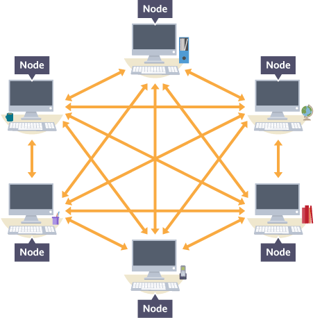
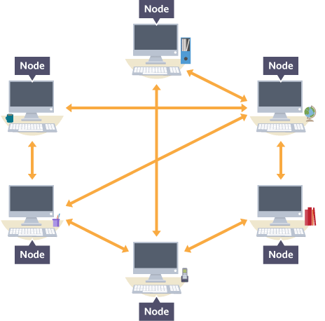

In a mesh topology there is no central connection point. Instead, each node is connected to at least one other node and usually to more than one. Each node is capable of sending messages to and receiving messages from other nodes. The nodes act as relays, passing on a message towards its final destination. There are two types of mesh topology:
full mesh topology
partial mesh topology
Mesh networks are becoming increasingly popular due to their efficiency.
With a full mesh, each node is directly connected to every other node. This enables a message to be sent along many individual routes.

With a partial mesh, not all nodes are connected directly to each other. A partial mesh therefore has fewer routes for a message to travel along than a full mesh but is simpler to implement.

Wired mesh networks tend to be uncommon, mainly because connecting all nodes to all other nodes is expensive and impractical. However, wireless mesh networks are increasingly being used since it is far simpler and cheaper to connect using radio signals.